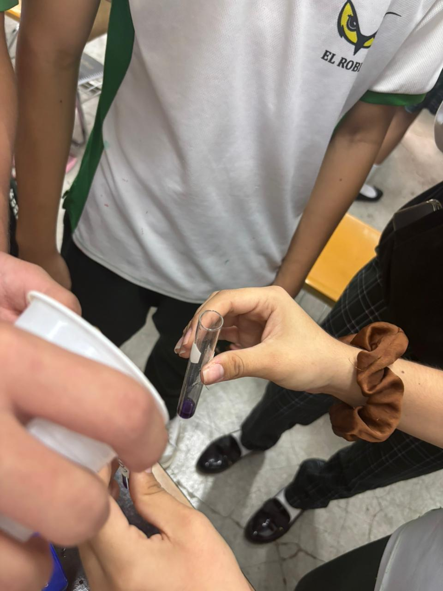
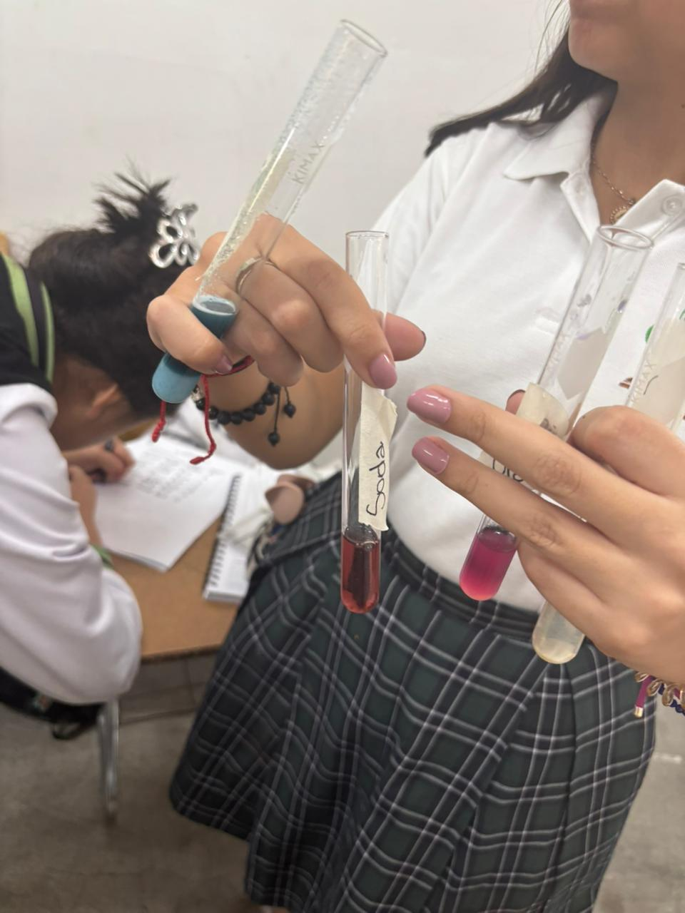

El Roble Academy
Chemistry Lab
By Tifany Estrada
Introduction
The PH scale is a scientific tool, it is use to measure the strength of acids
and bases in liquids. Acids often taste sour. This experiment show us how to get the PH
scale of each material it can be acid,neutral,or base.There are a series of
numbers from 0 to 14, it can be acid if it is from 0 to 6, neutral if it is 7,
and base from 8 to 14. The color of the acid ones is ligther, the neutrals doesn't
and the base are darker colors.

Hypothesis
If we test different products like
soda,lemon juice,and other products
with purple cabbagge juice we will see that their PH
is lower than 7 that means that is acid. And this will
happen with other products but they will have different PH.
Slippery or bitter substannces like soap or baking soda will have high PH.
